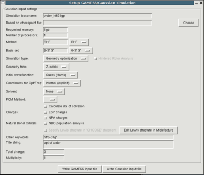

QMtool is a graphical user interface for quantum chemical simulations. Currently
only Gaussian is supported but future versions will also support GAMESS.
With QMtool you can easily set up many different kinds of QM simulation such as
geometry optimizations and freqency calculations, specify solvents and more.
After you ran the simulation you can load the QM logfiles and analyze the
results such as plotting energies or the IR spectrum. You can also
get a detailed thermochemistry analysis and you can graphically study the normal
modes or (for frequency calculations).
Even though QMtool simplifies the setup significantly and does some error
checking on the input, it is indispensable that you have an idea of what
you're doing. Consult the
Gaussian manual!
Features of QMtool include:
- Reading several input formats
- Z-matrix files
- Gaussian input files
- Paratool internal coordinate files
- Gaussian log files
- Parse various info from Gaussian output
- molecular geometries
- population analysis (Mulliken/NPA charges)
- ESP charges
- dipole moments
- Cartesian and internal coordinate Hessians
- unit conversion to Kcal/mol
- assign force constants to internal coordinates
- thermochemistry analysis
- Setup Gaussian input files for different types of simulation
- optimization
- frequency
- single point
- support for continuum solvent models (PCM)
- Work with internal coordinates
- Autogeneration
- pick bonds/angles/diheds/imprps with mouse
- selecting coordinates from list, vizualizaton in VMD
- Analysis
- SCF energy plots
- plotting vibrational spectra
- normal mode analysis and animation
- many different atom labels including Mulliken and NPA charges
- force constants and internal coordinates are graphically mapped
onto the molecule.
{kind=link}